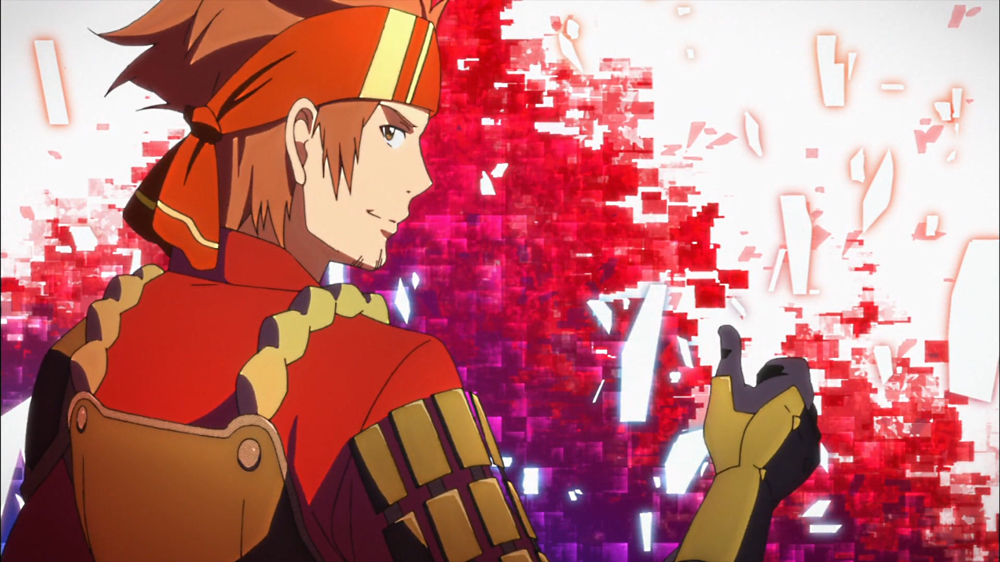

Protagonista
do anime.Foi um dos 1000 beta tester a testar o jogo tendo uma de suas primeiras passagens pelo anime já com maior reconhecimento do jogo e um passo à frente dos outros jogadores. Em meio às lutas constantes que travava no jogo Kirito conheceu alguns outros jogadores pelos quais pega amizade como Klein e Egil, e claro por Asuna por qual se apaixona e até se casa com ela no jogo. Ele é um jogador "solo", devido ao fato de no início do jogo ter pensado que sozinho seria capaz de zerar o jogo. É reconhecido pelos outros jogadores como "Espadachim Negro" sendo ele um lutador de linha de frente. Ele tem uma habilidade Dual Blade, o que o torna o único capaz de vencer o chefe final do jogo.
Asuna
A esposa de Kirito no jogo. Asuna é reconhecida como a vice-líder da Guilda dos Cavaleiros do Juramento de Sangue. Vista como a mais forte da guilda em Aincrad, é uma jogadora extremamente habilidosa que passou a ser chamada de "relâmpago" devido à sua grande velocidade.
Heathcliff
Criador do Nerve Gear e do Sword Art Online, ficou famoso por suas invenções e por ter prendido 10 mil pessoas no jogo sendo responsável pela morte de 4 mil delas. Líder da Guilda dos Cavaleiros do Juramento de Sangue, Heathcliff era o personagem mais poderoso do jogo e chefe do 100º andar.
Klein

Possui uma grande afinidade com Kirito, por ter sido seu 1º amigo em SAO e por ele ter lhe ensinado o básico para poder sobreviver no jogo.Kirito considerou levá-lo contigo em sua jornada, mas ele rejeitou o convite para fazer uma guilda com seus amigos, desde então tounou-se líder de tal guilda e encontro Kirito diversas vezes durante sua jornada.